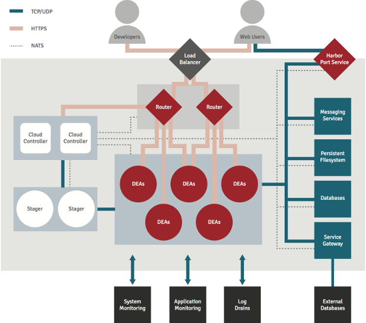

The Application Lifecycle Service VM is a stand-alone micro cloud virtual machine with all the components necessary for running a test environment in one instance. For use on a larger scale, the VM can be cloned and assigned specific roles: Router, Cloud Controller, Droplet Execution Agents (DEAs, or worker nodes), or specific database services.

The Base role comprises several processes that are necessary for any node to function as part of an Application Lifecycle Service cluster, and is mostly responsible for communicating with the primary node and forwarding log information.
This role cannot be disabled on any node.
The Primary role is a mandatory part of a Core node (or micro cloud) and runs a number of critical system processes, including the Cloud Controller, Health Manager, and Router.
The Health Manager keeps track of the apps on each DEA and provides feedback on the number currently running. It works in conjunction with the Cloud Controller and must be run on the same VM.
The Controller manages most of the operations of an Application Lifecycle Service system. It hosts the Management Console, provides the API endpoint for client access, manages the cloud_controller_ng process, provisions services, dispatches applications for staging and deployment, and (with the Health Manager) tracks the availability of DEA nodes. The Cloud Controller allocates instances of an application across available DEA nodes, prioritizing eligible nodes that are running the fewest instances of that app already. This maintains an even distribution of instances of an app across the pool.
In a cluster setup, the Controller role must run on the Core node that all other VM's in the cluster connect to.
A single Controller is sufficient for small and mid-sized clusters, but multiple Controllers can be configured if necessary for larger implementations.
The router directs incoming network traffic to the appropriate application.
For smaller configurations, the router can be run on the same Application Lifecycle Service VM as the other components.
When additional DEAs are in use and traffic increases, additional routers can be added to handle the load. This will require a load balancer to be available in the cluster.
The Droplet Execution Agent (DEA) role in Application Lifecycle Service is responsible for staging applications and running application instances within Linux containers. In an Application Lifecycle Service cluster, there will typically be a number of nodes running the DEA role, which in turn each host multiple user application instances.
The DEA role is comprised of a number of processes:
The Docker image used for the containers can be customized by admins.
Application Lifecycle Service nodes can also be assigned roles for data services. The data services can be run separately on their own nodes or grouped together.
Role groups represent a set of roles. For example the data-services group provides all databases plus RabbitMQ and the filesystem service:
kato role add data-services
Additional groups can be defined by administrators in /s/etc/kato/role_groups.yml.